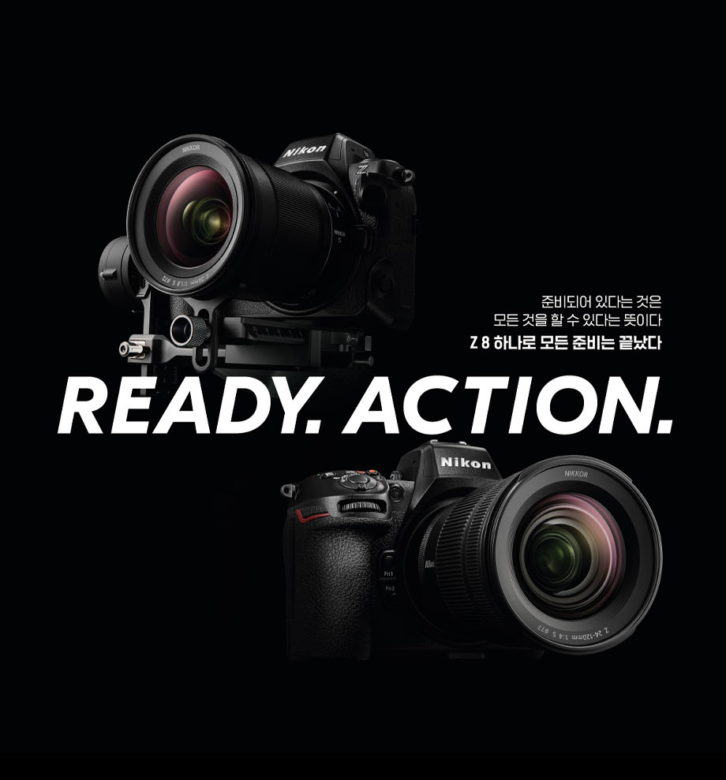

Z 9보다 약 30%정도 부피를 줄인 콤팩트한 바디에 Z 9의 우수한 성능과 기능을 밸런스 좋게 계승하여 높은 기동성을 실현했습니다. 가방에 수납이 용이하며 다양한 촬영 스타일에 유연하게 대응할 수 있기 때문에 어디든 가볍게 가지고 다니며 크리에이티브한 감성을 마음껏 발휘할 수 있습니다. 사진과 동영상을 가리지 않고 다양한 장면에서 안정적으로 촬영할 수 있습니다.
Z 9과 동일하게 롤링 셔터의 왜곡을 최소화한 적층형 CMOS 센서를 탑재했습니다. 기계식 셔터를 탑재하고 있지 않기 때문에 저소음으로 셔터의 마모를 신경쓰지 않고 대량 촬영이 가능합니다.
풍경이나 도시의 모습을 HEIF(High Efficiency Image File Format)로 촬영함으로써 풍부한 계조를 최대한으로 살린 저녁 노을 사진이나 넓은 다이내믹 레인지로 노출오버나 노출부족을 억제한 도시 야경의 사진을 얻을 수 있습니다.
12bit N-RAW, ProRes RAW HQ, 10bit ProRes 422HQ나 H.265의 고품질의 영상을 카메라 내에서 기록 가능합니다. 외장 레코더가 필요없기 때문에 간편한 시스템을 통해 기동성 있게 촬영할 수 있어 새로운 가능성을 펼칠 수 있습니다.
4K UHD 60p나 8K UHD 30p 동영상을 장시간 촬영할 수 있습니다. Z 9보다 소형·경량의 바디로, 하루종일 진행되는 이벤트 촬영이나 장시간의 다큐멘터리 촬영에도 적합합니다.
8K 오버 샘플링※1에 의한 고해상도 4K UHD 60p※2/50p※2, 30p, 25p, 24p를 10bit나 8bit로도 기록할 수 있습니다. 고해상도 NIKKOR Z 렌즈와 조합하여 압도적인 몰입감을 자아내는 4K 영상을 실현합니다.
풀사이즈
FX 포맷
유효화소수
4571만 화소
ISO 감도
64-25600
고속연속촬영
약 120fps
고속연속촬영
약 20fps
동영상 촬영
8.3K 60p
동영상 촬영
4K UHD/120p
무게
약 910g
snapBridge
지원